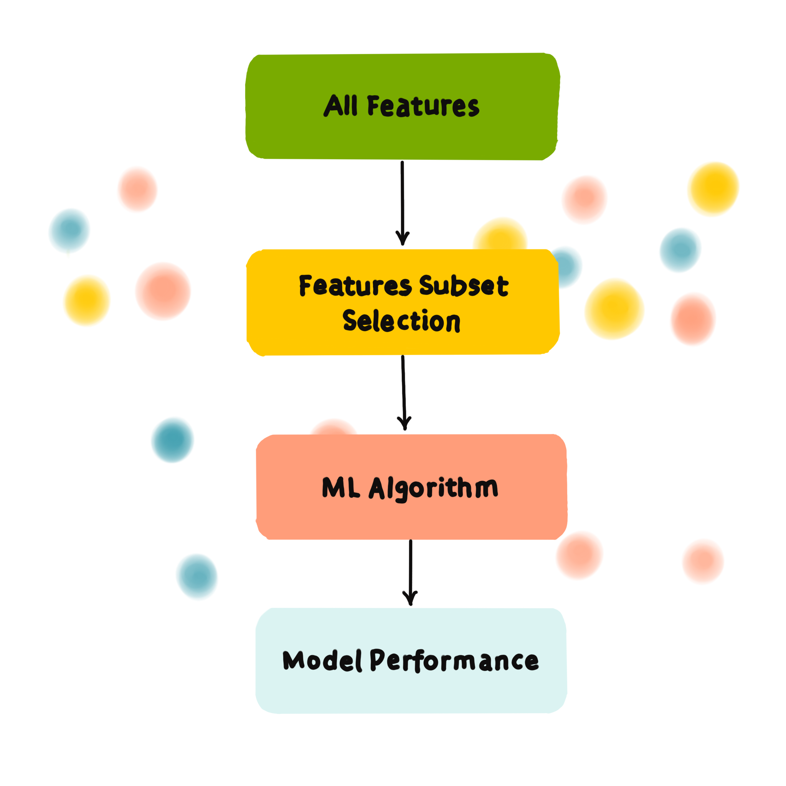

Chapter 1. Data Collection
On a sunny morning, a group of bees leave their hives and start their day's work. They fly to the flower fields in search of the sweetest nectar. These hardworking little animals constantly fly from one flower to another, collecting every drop of precious nectar. Nectar is not only their food source, but also the raw material for them to make honey. Through this collaboration, bees are able to efficiently collect large amounts of nectar to ensure that the needs of the entire hive are met.
This pattern of bee behavior is strikingly similar to the data collection process in machine learning. In machine learning, data collection is the first step. Just like bees collecting nectar, we need to collect data from a variety of sources. These sources can be databases, APIs, file systems, or even real-time data streams. We need to ensure that the collected data is diverse and comprehensive so that subsequent model training can have enough information to learn and predict.
For example, when we want to train an image classification model, we need to collect a large number of images, which may come from the Internet, may be captured by a camera, or may be an existing database. Just like bees flying between different flowers, we also need to switch between different data sources to collect as much useful data as possible.
Chapter 2. Data Cleaning

When bees select nectar, they screen and filter it, and they also discard nectar that is mixed with impurities or of poor quality. This process is very important for the quality of honey.
This is very similar to the data cleaning process in machine learning. After data collection, we will get a large amount of raw data. But these data may contain various problems, such as missing, duplicate, outliers, or wrong data. If we use these problematic data directly, the performance and accuracy of the model will be affected. Therefore, we need to clean and process the data.
The first step in data cleaning is to identify missing values. We can use a variety of methods to deal with missing values, such as deleting records containing missing values, filling missing values ​​with the mean or median, or using more complex interpolation methods. Next, we also need to delete or correct duplicate and wrong data.
Another important step is to deal with outliers. These outliers may be caused by data entry errors, sensor failures, or other reasons. We can use statistical methods or machine learning algorithms to identify and deal with these outliers.
Chapter 3. Feature Selection

In the world of bees, finding the sweetest nectar is an important task. After the initial screening in the previous step, bees will choose flowers that are most likely to be rich in nectar based on features such as color, shape, and smell.
This process is very similar to feature selection, which is equally important in machine learning. When we are faced with a large and complex data set, not all features will contribute to the performance of the model. Some features may affect the accuracy and efficiency of the model. Therefore, the goal of feature selection is to select the most useful parts from many features.
The feature selection process can be divided into the following steps:
1.Feature evaluation:
First, we need to evaluate the importance of each feature to the target variable. Just as bees judge the richness of nectar by perceiving the characteristics of flowers, we judge the usefulness of each feature by calculating its importance score.
2.Feature filter:
After the evaluation is completed, we need to filter these features. Features with lower scores will be eliminated, and higher ones will be retained. This process helps to reduce model complexity and improve training efficiency.
3.Feature combination:
Sometimes, the combination of multiple features can improve the performance of the model, so we can use feature engineering to combine some original features to generate new features, thereby improving the predictive ability of the model.
4.Repeated verification:
Feature selection is an iterative process. We need to continuously train the model, evaluate the model performance, and adjust the feature selection strategy based on the results.
Feature selection is not only a technical process, but also an art that requires experience and intuition. Just like bees flying among flowers and finding the best flowers based on experience, data scientists also need to find the most valuable features in a large amount of data to lay the foundation for the success of the model.
Chapter 4. Model Training
Bees remember which flowers they have visited before and learn from other bees' dances to find the best nectar. This process repeats over and over again, helping them find nectar faster.
Model training is very similar to this process. Just as bees fly to different flowers to collect nectar, algorithms learn from data and adjust themselves to reduce errors and improve accuracy.
Bees use memory and feedback from other bees to find good flowers. In machine learning, models repeatedly adjust themselves to get smarter based on data feedback.
Just as bees sometimes explore new flowers to check for nectar, models also validate themselves with new data. This ensures that the model performs well in the face of new data, just as bees are not dependent on one nectar source.
Bees optimize their routes to collect as much nectar as possible and consume the least amount of energy. In machine learning, algorithms adjust parameters to find the best settings and reduce prediction errors.
Over time, bees will build effective routes and find reliable sources of nectar. Machine learning models will also gradually get better and eventually reach a desired state and are ready to use.
Chapter 5. Model Evaluation

In the world of bees, it is very important to know whether their efforts to collect nectar were successful. At the end of a day's foraging, the bees return to the hive. Together, they evaluate this information and decide which flowers are good enough and which foraging paths are worth following. This ensures that they are increasingly efficient at finding nectar.
Similarly, in machine learning, there is a process of evaluating models. This is like checking what the model has learned from the data. After training the model, we need to test it with a new set of data. This helps us understand how the model performs when faced with new data. We measure the performance of the model with metrics such as accuracy.
Model evaluation is comparing the predicted results with the actual results. This allows us to see any differences and measure how good the model is. Just like bees adjust their foraging strategies based on the quality of the nectar, machine learning models can also be adjusted and improved based on the evaluation results. By continuously evaluating and improving, we can ensure that the model performs well and accurately in real-world applications.
Chapter 6. Prediction and Deployment

At the end, the bees use the experience gathered to predict the best flowers and nectar sources. In this way, the bees can effectively navigate to the most promising flowers, ensuring the survival and prosperity of the hive.
Similarly, in machine learning, the prediction and deployment phases are where the trained and evaluated models are put to real-world use. After thorough training and rigorous evaluation, the model is ready to make predictions on new data. Deployment involves integrating the model into a production environment where it can process live data and provide real-time insights or decisions.
The prediction process uses the patterns and relationships learned during training to generate outputs for new inputs. Deployment ensures that the model operates effectively in a real-world environment and continues to learn and adapt as it encounters new data. Just like a bee dynamically adjusts its foraging route based on real-time feedback.